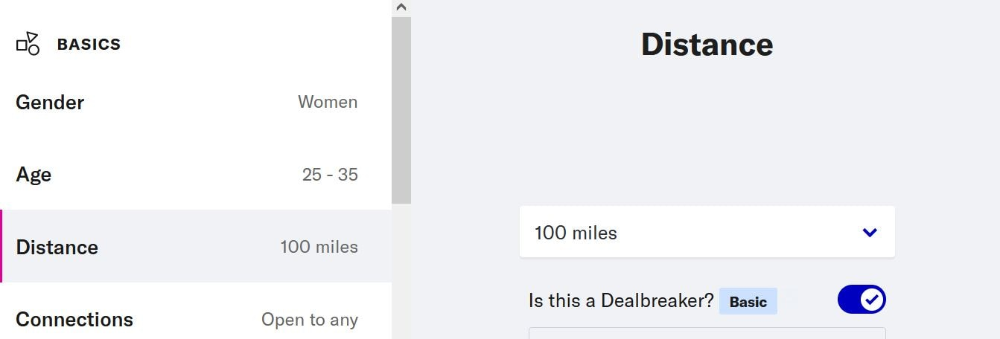

One things that annoys me a little though, is that I often get matches for people too far away from where I live, even with the distance filter set in my Settings:
Hence I have made a bookmarklet that auto-pass matches for a list of given cities. Then I got requests to add more criteria.
There are the steps to configure and use your own bookmarklet:
Now, whenever OkCupid suggests a match for you that correspond to one of those criteria, the Pass button will automatically and immediately be pressed.
Bookmarklet generated:
If you visit another web page, the bookmarklet will stop running. You will need to re-enable it on your next visit on the /discover page by clicking on it.